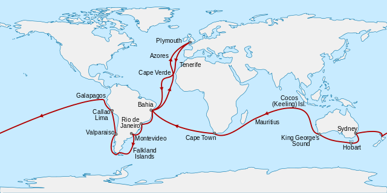
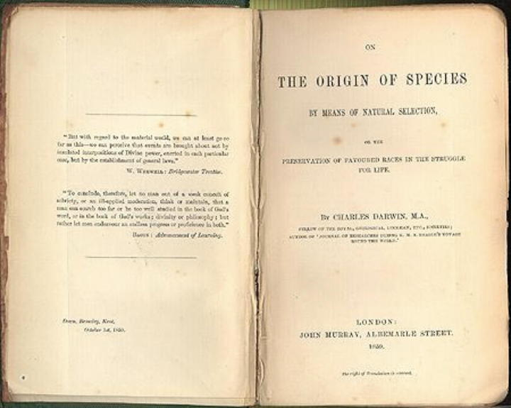

2 A brief history of evolutionary thought
DRAFT 20250113
The concept of biological evolution, as proposed by Darwin, stands as one of the most groundbreaking ideas in Western intellectual history, comparable in its impact to the revolutionary physics theories of Newton and Einstein. In this chapter we will discuss briefly the history of evolutionary thinking, from Darwin’s predecessors, to the formulation of his theory, how it was accepted (and rejected), and how it has changed over the decades. This is by necessity a brief overview, but if you are interested in more details about the history of evolutionary thinking, I have provided some links to additional information below.
2.1 Prior To Darwin
Historically, humanity has been intrigued by the origins of life from fairly early on in written history. Early Greek philosophers such as Anaximander (6th century BC) believed that living creatures originated from water, with humans and animals descending from fish. Similarly, Empedocles (5th century BC) proposed that body parts combined randomly to form creatures, with only viable combinations surviving. These ideas, however, were not scientific precursors to the theory of evolution but more akin to mythology.
Philosophers like Plato and Aristotle held the belief that species were fixed and unchanging. Plato suggested that every species had a fixed essence, an eternal idea in the mind of God, while Aristotle asserted that species possessed immutable properties.
These ideas influenced later Christian interpretations, particularly the belief that God created every creature with a distinct essence as described in the biblical account of creation in the book of Genesis (purportedly written by Moses). Accordingly so, all types of plants and animals reproduce “according to their kind”, which implicitly precludes evolution as a process driving the diversity of life.
The concept of life was seen as a hierarchical scala Naturae, ranging from inanimate objects to higher life forms, with humans positioned between animals and angels.
This hierarchy was believed to be eternal and unchanging, as any alteration would imply imperfection in God’s original creation.
Darwin’s theory posed a significant challenge to the prevailing worldview at the time, which had its roots in the philosophies of Plato, Aristotle, and subsequent christian beliefs that stressed the concept of species possessing immutable (unchanging) characteristics. However, even before Darwin there were hints of a shift toward “evolutionary thinking”.
The first traces of true evolutionary thinking can be found back in the 18th and 19th centuries, when natural history began to shift from a religious perspective to a more scientific approach. During this period, naturalists like Carolus Linnaeus (1707-1778) made significant contributions to the field of taxonomy, although their work was still framed within a creationist worldview.
Linnaeus, renowned for his comprehensive classification system outlined in Systema Naturae (1735), organized species into hierarchical categories based on their perceived relationships. However, his understanding of these relationships was rooted in the idea of a divine creation plan rather than evolutionary connections.
Pre-Darwiian non-western concepts of evolution
Though most histories of “evolutionary thinking” pre-Darwin emphasize the western world, several pre-Darwinian concepts of evolution emerged from Islamic and Eastern philosophical traditions, demonstrating that evolutionary ideas were not exclusive to Western thought. For example:
- The Islamic scholar Al-Jahiz (776-869 AD) Al-Jahiz, in his work “Kitab al-Hayawan” (Book of Animals), discussed several concepts that resemble modern evolutionary theory, including the struggle for existence, adaptation to environmental factors, and transformation of species. He proposed that animals engage in a struggle for resources and survival, with environmental factors influencing the development of new characteristics.
- Ibn Miskawaih (932-1030 AD) who presented a theory of biological evolution in his book “Al-Fauz al-Asghar” (The Small Achievement). He believed in the aquatic origin of life and described an evolutionary process, albeit attributing it to the Creator.
- Al-Biruni’s (973-1048 AD) writings have been interpreted by some scholars as containing evolutionary ideas. His work influenced later Muslim scientists and potentially contributed to the development of evolutionary thought.
- A 10th-century Islamic encyclopedia entitled “The Encyclopedia of the Brethren of Purity” expanded on the concept of the great chain of being. It proposed a causal relationship advancing up the chain as the mechanism of creation, starting from matter and energy, progressing to minerals, and eventually to more complex forms of life.
- In his work “Muqaddimah,” Ibn Khaldun (1332-1406) discussed what some commentators interpret as anticipating biological evolution. He asserted that humans developed from “the world of the monkeys” and described a process by which “species become more numerous”.
While these pre-Darwinian concepts share some similarities with modern evolutionary theory, it’s important to note that they differ in significant ways. First, many of these ideas were speculative rather than based on extensive empirical evidence, a coming hallmark of western science. In addition, they often incorporated religious or philosophical elements not present in Darwin’s scientific theory. And certainly the mechanism of natural selection, central to Darwin’s theory, was not fully developed in these earlier concepts. Nevertheless, these pre-Darwinian ideas demonstrate that evolutionary thinking has a rich history across various cultures and philosophical traditions. If you are interested in the history of evolutionary thinking from a non-western perspective, see Pre-Darwinian Muslim Scholars’ Views on Evolution or this article in Vice.
2.2 The Enlightenment and Scientific Progress
The Enlightenment movement, inspired by Isaac Newton’s scientific explanations, played a crucial role in challenging the literal interpretation of biblical creation. This philosophical shift paved the way for the emergence of modern scientific thought and laid the groundwork for evolutionary theories.
Astronomers and geologists were instrumental in this process, providing evidence for the ancient age of the Earth and the existence of extinct species The principle of uniformitarianism, proposed by geologists James Hutton and Charles Lyell, suggested that present-day processes could explain past geological changes. It can not be stressed enough the profound impact Lyell’s writing had on Darwin’s thinking on evolution.
Early Evolutionary Ideas
In the 18th century, French philosophers and naturalists began proposing natural explanations for the origin of species, moving away ever so slightly from special creation as found in the Judeo-Christian bible.
Georges Cuvier (1769-1832), known as the father of paleontology, opposed evolutionary ideas, emphasizing instead the concept of organic succession. In addition to paleontology, Cuvier championed method of comparative anatomy, and proposed that Earth was very old (certainly older than the 7,000 years proposed by the Bishop of Usher based on the geneologies found within Genesis) with a history punctuated by “revolutions” (catastrophes). He argued that while species appeared and disappeared over epochs, this did not result from evolution but rather from distinct, successive creations. In Cuvier we find the first inklings of movement from the biblical interpretation of the creation to something a little other.
The idea of evolution remained controversial, and most naturalists adhered to “natural theology,” as illustrated by William Paley’s Natural Theology (1802), which argued for the existence of a divine creator based on the complexity of organisms.
The first real cracks in the edifice of creationism was the pre-Darwinian evolutionary hypothesis came from the Chevalier de Lamarck in his 1809 work “Philosophie Zoologique”.
Lamarck’s theory suggested that:
- Organisms originated separately through spontaneous generation.
- A “nervous fluid” drove species to progress up a chain of being.
- Species differences arose from varying needs and organ usage.
- Acquired characteristics could be inherited by offspring.
This concept of inheritance of acquired characteristics became known as Lamarckism, though the idea was not Lamarck’s uniquely. A classic example of this theory is the explanation for giraffe neck elongation, where repeated stretching to reach higher foliage was thought to result in longer necks over generations.
While Lamarck’s specific mechanisms were later disproved, his work represents the first coherent and testable evolutionary theory, marking an important step in the development of evolutionary biology. In addition, even though his ideas of acquired inheritance, though soundly rejected, have taken on a new interpretation today in light of recent findings of the role of epigenetic changes and their impact on organismal adaptation and evolution.
There were other notable natural historians that contributed in one way or another to the shift from a purely biblical interpretation of special creation to moving down the path of evolution. You can check out the links below of you would like to learn more. The bottom line is that the concept of change over time, or transmutation as it was referred to, or evolution today, was “in the air” when Darwin came on the scene. However, Darwin’s theory of evolution marked the fundamental challenge of these long-held beliefs by solidifying the concept of species change over time, thereby disrupting the notion of a fixed and immutable natural order. This revolutionary idea forced a reevaluation of humanity’s place in the natural world and the mechanisms driving biological diversity.
Some additional links if you are interested in learning more about the history of evolutionary thinking
2.3 And then there was Darwin
by Michi Tobler
Charles Darwin, born in 1809, was a pivotal figure in the history of science whose work revolutionized our understanding of life on Earth. Initially destined for a career in medicine and then the clergy, Darwin’s true passion lay in natural history. His life took a dramatic turn when he embarked on a five-year voyage aboard the HMS Beagle in 1831, serving as the ship’s naturalist.
The Voyage that Changed Everything
During his journey, Darwin made extensive observations and collected numerous specimens, particularly in South America and the Galápagos Islands. It was here that he noticed intriguing variations in species across different islands, such as mockingbirds and giant tortoises. These observations, combined with his findings of fossil mammals in South America, planted the seeds of his evolutionary theory.
Darwin and the Conception of a New Idea
When Darwin boarded the British Navy Ship HMS Beagle as a 22-year old, he was already well trained in geology, chemistry, and natural history. Darwin was hired as an unofficial naturalist and companion to the captain of the ship, Robert FitzRoy, and the five-year journey around the world allowed young Darwin to collect evidence of a changing world (Figure @ref(fig:beaglemap)).
Darwin’s visit to the Galapagos Islands, and the specimens of reptiles and birds that he collected there, proved to be particularly inspiring. The Galapagos are an archipelago of 21 small islands, located over 900 kilometers off the coast of Ecuador, and situated right on the equator. Darwin not only noticed that the fauna of these islands was dominated by animals found nowhere else, but there also were differences in the species from one island to the next. Most importantly, bird specimens that Darwin believed to be blackbirds, warblers, wrens, and finches due to their different beak morphologies later all turned out to be just finches—the Darwin’s finches we know today (Figure @ref(fig:finches)). In his own words:
“I have stated, that in the thirteen species of ground-finches, a nearly perfect gradation may be traced, from a beak extraordinarily thick, to one so fine, that it may be compared to that of a warbler. […] Seeing this gradation and diversity of structure in one small, intimately related group of birds, one might really fancy that from an original paucity of birds in this archipelago, one species had been taken and modified for different ends.”
— Darwin, 1889
If all the species were created with traits that fit the environments in which they are now found, why would the finches of the Galapagos Islands be so different from one another? Why do closely related species occupy niches that are filled by very different taxa in other regions? Observations like these, which Darwin made at many destinations throughout his travels, led him to suspect that the species we observe today have evolved from a shared ancestor.

The Birth of a Revolutionary Idea
Upon his return to England, Darwin devoted himself to scientific work, thanks to his comfortable financial situation. In 1838, inspired by Thomas Malthus’ essay on population growth, Darwin conceived the groundbreaking idea of natural selection. This concept suggested that organisms with favorable traits would be more likely to survive and reproduce, gradually altering the characteristics of a species over time.
From Conception to Publication
Darwin spent the next two decades meticulously developing his theory and gathering evidence. His caution in publishing was well-founded, given the controversial nature of his ideas. In a twist of fate, Alfred Russel Wallace, a young naturalist, independently conceived a similar theory in 1858. This prompted Darwin to finally publish his work.
Alfred Russel Wallace
Darwin described evolution as descent with modification. It turns out that he was not the only one to think about the ever-changing world in this way. Another prominent naturalist of the time, Alfred Russel Wallace, independently conceived the theory of evolution through natural selection. Like Darwin, Wallace conducted extensive fieldwork in the tropics and was a meticulous observer of the natural world. In 1858, Wallace wrote a letter to Darwin—who was by then an eminent scholar but had not published his views on evolution yet—detailing his own ideas about natural selection. This led to the joint publication of short abstracts detailing Darwin’s and Wallace’s views of evolution, and more importantly, it motivated Darwin to finish and publish his famous work, On the Origin of Species, in 1859. So, why does most of the credit for formalizing evolutionary theory go to Darwin rather than Wallace? Well, Darwin was undoubtedly first, ruminating on his ideas about evolution for decades before deciding to publish. As a consequence, he was able to introduce his views in much richer detail and provided many lines of evidence in support of his theory.
To learn more about Alfred Russel Wallace, listen to “He Helped Discover Evolution, And Then Became Extinct”, an NPR story published on the 100th anniversary of his death.

2.4 On The Origin of Species
by Michi Tobler & Shawn McCafferty
On November 24, 1859, Darwin’s seminal work, “On the Origin of Species by Means of Natural Selection,” was published, catapulting him to both fame and controversy.
From the perspective of evolutionary biology, Darwin made three great contributions that were published in On the Origin of Species.
Three major contributions of Darwin presented in OTOS
- Presented overwhelming evidence for evolution.
- Evolution occurs by divergence from common ancestor, and can be represented as an evolutionary tree.
- Proposed a mechanism for evolution, natural selection.
For the remainder of his life, Darwin continued his scientific pursuits, revising his magnum opus and publishing numerous other works, including “The Descent of Man”. His legacy is that of a man with an insatiable curiosity about the natural world, whose keen observations and innovative thinking led to a unified understanding of life’s diversity. His theory of evolution by natural selection remains a cornerstone of modern biology, shaping our understanding of life on Earth to this day. However, it is important to remember that Darwin was a man of his times, and though quite progressive for the Victorian Era, nonetheless maintained ideas concerning race and gender that today would be considered offensive and racist. (find a reference for this)
Darwin’s Two Fundamental Insights
In his endeavors of pigeon breeding, Darwin noticed two critical things: (1) Offspring tended to inherit the traits of their parents. (2) If he carefully selected breeders with desired traits generation after generation, he was able to shape the variation of colors, morphology, and behaviors in his flock. It was observations such as this, coupled with his meticulous work as a natural historian and collecting evidence for his emerging ideas for over two decades, that ultimately led Darwin to formulate the basic tenets of evolutionary biology that still hold up today, after more than 150 years of scrutiny by the scientific community.
The Pattern: Evolution is Descent with Modification
The first of Darwin’s fundamental insights was the formal description of evolution as we understand it today. He described evolution as descent with modification, postulating the common ancestry of all living things. Hence, different species did not arise independently, but they derived from preexisting form. This insight arose from a careful analysis of patterns of similarities across species. Species that share a recent common ancestor share traits precisely because they inherited them from the shared ancestor. More distantly related taxa exhibit differences in their traits, because they have been on independent evolutionary trajectories for longer periods of time. This perspective describes the observable pattern of evolution.
The power of Darwin’s idea of descent with modification is that we can treat it as a scientific hypothesis with empirically testable predictions. If Darwin’s notion of evolution was right, we should be able to uncover evidence that:
- Species change through time (microevolution).
- Lineages split to form new species (speciation).
- Novel forms derive from earlier forms (macroevolution).
- Species are not independent but connected by descent from a common ancestor (common ancestry and homology).
- Earth and life on Earth are old (deep time).
We will revisit these predictions and examine the evidence for evolution in the next chapter on the evidence of evolution.
The Process: Natural Selection is a Mechanism of Evolution
The second of Darwin’s fundamental insights was the inception of a mechanism that could produce the observable pattern we call evolution (i.e., change in inherited traits across generations), which Darwin named natural selection.
Note
Definition: Natural Selection
Natural selection is the process in which individuals with a particular trait exhibit higher reproductive success than individuals without that trait.
Natural selection explains how the traits of a population change through time, and why organisms are well suited for their environment. Individuals that exhibit traits that are advantageous under certain environmental conditions have a higher chance of surviving and reproducing, making a disproportional contribution to the offspring of the next generation. If the relevant traits are heritable, their frequency increases across subsequent generations. This process not only leads to change in populations across generations, but said change specifically pertains to traits that are important for survival and reproduction in a given environmental context. In other words, the action of natural selection directly leads to adaptation. We will take a close look at how natural selection works in chapter XXXX and others.
Distinguishing between Pattern and Process
A key misconception is that evolution and natural selection are the same. People often use the two terms interchangeably, conflating patterns and processes of evolution. Distinguishing between the two is critical, because evolution and natural selection do not have to go in unison.
Evolution is a historical pattern of change that can—but does not have to—be caused by natural selection. Evolutionary change can also be driven by other forces that impact the composition of populations across generations. In Part II of this book, we will examine evolutionary forces other than natural selection, which include mutation, genetic drift, and migration. In natural populations, these four forces interact to shape evolutionary change across time.
It is also important to note that the action of natural selection does not necessarily lead to evolution. Natural selection can only cause evolution when it acts on heritable traits that are transmitted from parent to offspring. If that is the case, the offspring of successful individuals will carry the same traits that made their parents successful. However, not all traits are heritable. For example, selection on individuals exhibiting high muscle mass does not translate to evolutionary change if that muscle mass was acquired through exercise and diet. If natural selection acts on non-heritable traits, there is no evolutionary change.
While Darwin’s hypothesis of common descent was quickly accepted, his idea of natural selection faced resistance due to philosophical biases and gaps in understanding heritability. Competing theories like Neo-Lamarckism and mutationism arose but were gradually integrated or disproven as more evidence supported Darwin’s theory.
2.5 Darwin’s Theory of Evolution
Darwin’s theory of evolution, though simple in its core principles, revolutionized our understanding of life. As we understand evolution today, it can be summarized as: life on Earth evolved gradually, beginning with a primitive species—possibly a self-replicating molecule—that lived more than 3.5 billion years ago. Over time, this species diversified into the many forms of life we see today, with natural selection being the primary mechanism for evolutionary change. (Coyne (2009))
Today we recognize that Darwin’s Theory of Evolution is actually made up of six distinct components. As detailed in Futuyma and Fitzpatrick, they are:
Evolution as such is the simple proposition that the characteristics of organisms change over time. Darwin was not the first to have this idea, but he so convincingly marshaled the evidence for evolution that most scientists soon accepted that it has indeed occurred.
Common descent: Differing radically from Lamarck, Darwin was the first to argue that species had diverged from common ancestors and that species could be portrayed as one great family tree representing actual ancestry.
Gradualism is Darwin’s proposition that the differences between even radically different organisms have evolved by small steps through intermediate forms, not by leaps (“saltations”).
Populational change is Darwin’s hypothesis that evolution occurs by changes in the proportions (frequencies) of different variant kinds of individuals within a population (see Figure 1.6B). Prior to Darwin, scholars viewed individual organisms as imperfect representations of a central Platonic type (the perfect manifestation of a species). Variation among individuals was considered to be meaningless noise that was either ignored or seen as a nuisance when describing and classifying species. In contrast, population thinking rejects the notion of an ideal representative and instead focus on the variants found within populations. Variation among individuals is not just meaningless noise that represents different degrees of imperfections from a preconceived idea, but it is the raw material for evolutionary change. In other words, what was meaningless noise to naturalists prior to Darwin suddenly became the very focus of evolutionary studies after. This profoundly important, completely original idea contrasts with the sudden origin of new species by saltation and with Lamarckian transformation of individuals. For Darwin, the average was a statistical abstraction; there exist only varied individuals, and there are no fixed limits to the variation that a species may undergo. Mayr (1982) argued that this paradigm shift was one of Darwin’s most important contributions to modern biology.
Natural selection was Darwin’s brilliant hypothesis, independently conceived by Wallace, that accounts for adaptations, features that appear “designed” to fit organisms to their environment. Because it provided an entirely natural, mechanistic explanation for adaptive design that had previously been attributed to a divine intelligence, the concept of natural selection revolutionized not only biology, but Western thought as a whole.
To these five we can add a sixth component, which is not directly attributable to Darwin, but as will become apparent throughout the semester, plays an absolutely essential role in evolution, so it is important to include it here.
- Non-selective mechanisms: Evolution is also influenced by random factors, such as genetic drift or mutations.
A slightly different take on the six components of Darwin’s Theory of Evoution from the Mordern Synthesis
- Evolution itself: Over time, groups of organisms change based on changes in their DNA.
- Gradualism: Evolution occurs over generations, not necessarily slowly but consistently over time.
- Speciation: New species arise from the splitting of populations into groups that become distinct enough from each other.
- Common Ancestry: All organisms on Earth share a common ancestor.
- Natural Selection: The non-random process where certain traits increase an organism’s chances of survival and reproduction.
- Non-selective mechanisms: Evolution is also influenced by random factors, such as genetic drift or mutations.
2.6 The Post-Darwin Era
When On The Origin Of Species was published in 1859, it was an immediate best seller. The first edition quickly sold out, with numerous additional editions being issued over the years. Theologins were appalled and a majority of the established natural scientists were skeptical, while many of the younger scientists like Thomas Henry Huxley (1825–1895), and Joseph Dalton Hooker (1817–1911) became ardent supporters. Over time the concept of evolution through descent with modification generally gained widespread acceptance by the 1870s. However, Darwin’s proposed mechanism of natural selection as the primary driver of evolution remained contentious for about six decades following Darwin’s publication.
The aftermath of Darwin’s groundbreaking work fostered in a period of significant scientific advancement and debate in evolutionary biology. The late 19th and early 20th centuries marked a golden age for paleontology and comparative studies in morphology and embryology. This period saw extensive research into the fossil record and organismal relationships, with Darwin’s idea of descent with modification taking an increasingly important role as the bedrock of understanding natural patterns.
Alternative Theories
There were several alternative theories to Darwin’s that emerged during this time. Principal among them were:
Neo-Lamarckism: These theories revived the idea of inherited acquired characteristics. However, experiments like August Weismann’s tail-cutting study on mice failed to support this concept.
Orthogenesis: Proponents of this theory believed in “straight-line evolution,” suggesting that species evolved in predetermined directions due to internal forces, independent of natural selection. Once along one of these predetermined directions, which may well have been adaptive at the start, a species would continue along that trend with a sort of momentum, eventually progressing to nonadaptive extremes. This all suggested a sort of directionalty and purpose to nature, revisiting outdated concepts steeped in teleology.
Mutationism: Some geneticists proposed that new species arose solely through mutations, without the need for natural selection. For example, in single generation a new mutation could produce a new species, a concept effectively promoted by the Dutch plant physiologist Hugo de Vries (1848–1934). This idea continued up until the 1930s when Richard Goldschmidt coined the phrase “hopeful monsters”. Though mutationism saw some support among the increasing number of scientists studying evolution at the time, there was little empirical support, and ultimately considered erroneous.
The Evolutionary Synthesis
One of the biggest stumbling blocks in the acceptance of Darwin’s theories was a lack of understanding of basic inheritance. The generally accepted view of inheritance at the time, and this included Darwin, was of “blending inheritance”, which posed a substantial problem to how natural selection could work. However, this all starting changing in the early 1900s with the rediscovery of Mendel’s work and a increasing interest in genetics research. Still it took roughly two decades for the field of genetics to unify around Mendel’s theory, mostly due to a new generation of investigators trained in mathematics and statistics, and apply this new understanding directly to Darwinism.
The stage was then set in the 1930s and 1940s for a reconciliation between Darwin’s ideas and this newly emerging understanding of genetic principles. This framework, often called neo-Darwinism, the Evolutionary Synthesis, or the Modern Synthesis, rested on the concept that adaptive evolution results from natural selection acting on Mendelian genetic variation. Though not one single event per se, the Evolutionary Synthesis (ES) saw the unification of ideas in the fields of Mendelian and quantitative genetics, mathematical population genetics, biometry, and evolutionary theory that included paleontology, taxonomy, biogeography, field studies of natural variation, and population structure. Key contributors to this synthesis included:
- Mathematicians like Ronald A. Fisher, John B. S. Haldane, and Sewall Wright, who developed population genetics theories.
- Biologists such as Theodosius Dobzhansky, Ernst Mayr, and G. Ledyard Stebbins, who applied these concepts to various biological disciplines.
- Paleontologist George Gaylord Simpson, who integrated fossil evidence with the new evolutionary framework.
These scientists argued that microevolution (changes within species) and macroevolution (changes above the species level) are driven by the same fundamental processes: mutation, gene flow, natural selection, and genetic drift. This unified view forms the foundation of modern evolutionary biology, providing a comprehensive explanation for the diversity and adaptation of life on Earth, and establishing principles that continue to shape our understanding of evolution today.
This idea of a unified ES continued through the 1950s and onward, in particular driven and modified by insights from the emerging field of molecular biology marked by the seminal publication of Watson and Crick on the structure of DNA.
Fundamental principles of evolution that emerged from the Evolutionary Synthesis (from Futuyma & Kirkpatric (2017))
- An individual’s phenotype (its observed traits) is distinct from its genotype (its DNA). Phenotypic differences among individuals are caused by both genetic differences and environmental effects.
- Acquired characteristics are not inherited.
- Hereditary variations are based on particles—the genes. This is true for traits with continuous variation(e.g., body size) as well as those with discrete variation(e.g., eye color)
- Genetic variation arises by random mutation. Mutations do not arise in response to need. Variation that arises by mutation is amplified by recombination of alleles at different loci.
- Evolution is a change of a population, not of an individual. The elementary process of evolution is a change across generations in the frequencies of alleles or genotypes, which can change the frequencies of phenotypes.
- Changes in allele frequencies may be random or nonrandom. Natural selection results from differences among individuals in survival and reproduction, and causes nonrandom changes. Genetic drift causes random changes.
- Natural selection can account for both slight and great differences among species. Even a low intensity of natural selection can cause substantial evolutionary change over time. Adaptations are traits that have been shaped by natural selection
- Natural selection can alter populations beyond the original range of variation when changes in allele frequencies generate new combinations of genes.
- Populations usually have considerable genetic variation. Many populations evolve rapidly, to some degree, when environmental conditions change, and do not have to wait for new favorable mutations.
- The differences between species evolve by rather small steps, and are often based on differences at many genes that accumulated over many generations.
- Species are groups of interbreeding or potentially interbreeding individuals that do not exchange genes with other such groups. Species are not defined simply by phenotypic differences. Rather, they represent separately evolving “gene pools”.
- Speciation (the origin of two species from a single ancestor species) usually occurs by the genetic differentiation of geographically isolated populations. Species have genetic differences that prevent interbreeding if they are no longer geographically separated.
- Higher taxa arise by the sequential accumulation of small differences, rather than by the sudden appearance of drastically new types by mutation.
- All organisms form a great Tree of Life (or phylogeny) that evolved by the branching of common ancestors into diverse lineages, chiefly by speciation.
- All forms of life descended from a single common ancestor that lived in the remote past.
Beyond the Evolutionary Synthesis
The rapid development of molecular biology marked by Watson and Crick’s model of DNA published in 1953 saw evolutionary biology making great strides in understanding in various areas, e.g. ability or estimate evolutionary rates, the molecular basis of evolution, molecular taxonomy and phylogenetics, genome structure and function, comparative genomics of related lineages, the complexities around the genotype-phenotype connection, and mechanisms driving variation across the genome. Some important highlights of this period included:
- Crick’s outlining of what is now referred to as the Central Dogma of Molecular Biology and the prediction of using protein sequence data to potentially date evolutionary events (Cobb (2017)).
- Zuckerkandl and Pauling (1962) formally introduced the concept of the molecular clock (though not yet by that name).
- W. D. Hamilton published two papers on “The Genetical Evolution of Social Behaviour” in 1964. These defined the concept of inclusive fitness and kin selection, providing a Darwinian interpretation for seemingly nonadaptive behaviors such as altruistism.
- George C. Williams publishes his influential book Adaptation and Natural Selection (1966), which ushered the movement in the field toward a gene centered view of natural selection and away from growing naive views of group selection that were becoming prevalent at that time.
- Publication of Lewontin and Hubby’s seminal paper on protein variation in natural populations (Charlesworth et al. (2016)), a landmark in the study of genome-wide levels of variability using protein electrophoresis. This and other papers at that time led to decade’s of research on many different species by numerous investigators using allozymes. It marked the beginning of a revolution in the field of evolutionary biology, and advances in understanding of important population genetics processes such as genetic drift, balancing and purifying selection, and the effects of selection on linked variants. The current use of whole-genome sequences in studies of variation is the direct descendant of this pioneering work.
- In response to Lewontin and Hubby’s work, Motoo Kimura introduced the neutral theory of molecular evolution in 1968, which led to a decade’s long debate concerning the selective nature of allozyme variation referred to as the neutralist-selectionist debate, emphasizing the importance of neutral molecular variation (later nearly-neutral by Ohta) and genetic drift in driving patterns of genetic variation within and among individuals and populations.
- The English translation of Willi Hennig’s influential book on cladistics, titled “Phylogenetic Systematics,” is published in 1966. This work laid the foundation for what would become known as cladistics, transforming the classification of organisms into a more rigorous science. It also marked a decade’s long debate between cladists (those who evangelized Hennig’s approach to systematics and phylogenetics) and the pheneticists (researchers who promoted the methods of numerical taxonom and phenetics.
- Eldredge and Gould published their landmark paper on punctuated equilibrium in 1972 proposing that the degree of gradualism commonly attributed to Darwin is virtually nonexistent in the fossil record, and that stasis dominates the history of most fossil species, punctuated by bouts of rapid evolution. Their marked yet another decade’s long controversy on whether evolution occurred by phyletic gradualism or punctuated equilibrium.
- In 1975, E. O. Wilson published his controversial book Sociobiology: The New Synthesis, where he attempted to apply evolutionary principles to animal and human social behavior. This of course provoked intense debate and withering criticism, including a reliance on genetic determinism, a lack of empirical evidence, dependence on the Naturalistic Fallacy, and numerous political implications. More recently sociobiology (and its reliance on group selection thinking) has seen an emergence with the advent of evolutionary psychology in the 1990s, reigniting debates about the extent to which human behavior and cognition can be explained by evolutionary adaptations.
- Edward B. Lewis (1978) published a paper describing homeotic genes, showing that many so-called toolkit genes act to regulate development, influencing the expression of other genes. His paper marks the beginning of Evolutionary Developmental Biology or EvoDevo as an important field in evolutionary biology.
- Starting in the 1980s, rapid advances in molecular biology quickly spilled over into evolutionary biology including cloning, DNA RFLP analysis, mitochondrial DNA analysis, Sanger sequencing, PCR, automated sequencing, transcriptome analysis, and on up to whole genome/transcriptome analyses today has led to profound insights into how evolution works and the genotype-phenotye connection so critical in understanding how evolution really works.
While there have been advances, such as insights from evolutionary developmental biology (evodevo), the core framework established by the Modern Synthesis remains central to evolutionary biology. With the opening of the molecular age marked by the seminal work of Watson and Crick and our increased though unfinished understanding of the genome-phenotype connection driven by modern molecular biology and genomics, there have been calls to revisit and refine the Evolutionary Synthesis ranging from modifying the central tenets on up to “Darwin was all wrong and we need to completely revise the failed ES”. In the next section we will very briefly mention a few of these criticisms and suggestions before wrapping up this section.
The Extended Evolutionary Synthesis (ESS)
Since the late 1990’s and early 2000’s there has been repeated calls to modify or extend the Evolutionary Synthesis to accommodate recent advances and findings in such diverse fields as the study of society, developmental biology, epigenetics, molecular biology, microbiology, genomics, symbiogenesis, and horizontal gene transfer. Some authors have gone to such extremes as to declare that the ES is not just incomplete, but has been effectively falsified by later biological research (Noble (2011)), or that the “the edifice of the [early 20th century] Modern Synthesis has crumbled, apparently, beyond repair” (Koonin (2009)). As you can probably imagine, I am not a fan of these positions. I see neither of these author’s arguments as warranting a rejection of the ES in the least, nor as arguments against Darwin’s Theory of Evolution.
Still, there remains a rising tide arguing for extending the ES to incorporate specifically some of the more recent insights. For example, Massimo Pigliucci has called for an Extended Evolutionary Synthesis that incorporates aspects of biology that had not been included or were not even known in the mid-20th century. His vision revisits the relative importance of different factors, challenges assumptions made in the modern synthesis, and adds a few new factors such as multilevel selection, transgenerational epigenetic inheritance, niche construction, and aspects of the concept of evolvability. Other authors point out that a new synthesis should embrace insights from other fields that were left out of the ES, including embryological developmental theory, morphology, and ecology, and should include concepts of inheritance that go beyond simple inheritance, for example epigenic effects1, phenotypic plasticity2, the Baldwin effect3 and maternal effects (Kutschera and Niklas (2004)). Many other authors have stated the importance of incorporating concepts of EvoDev theory into a new ESS, most notably Carroll (2008).
In my opinion, there is nothing particularly sacrosanct about the Evolutionary (Modern) Synthesis that requires that we hold it as dogma. It certainly does not deserve to thrown out completely as some authors declare, especially without having a clearly thought out and coherent replacement. Phenomena like horizontal gene transfer (HGT) are not a fatal challenge to evolution, but actually fit neatly to evolutionary theory as an additional source of genomic variation, something the original authors of the ES could not have possibly known about to take into consideration. Likewise HGT does nothing to cause us to throw out the whole concept of an evolutionary tree central to Darwin’s theory, though there are authors that claim that is the case. It is after all simply a metaphor for common descent that lends itself quite readily to estimating using math and algorithms. It may not be the greatest metaphor for Bacteria and Archae evolution (it certainly seems pretty solid by me for Eukaryotes), but please give us a better one to work with besides clouds of data points.
In fact, The Evolutionary (or Modern) Synthesis is probably best viewed more as a bookmark in the history of evolutionary thinking rather than a specific event that codified evolutionary theory to perpetuity. It is an ongoing endeavor, seamlessly changing as it incorporates new scientific discoveries and insights, yet retaining most of the original structure that marked the original edifice.
In closing, I suppose I am in agreement (no surprise there) with my PhD advisor Doug Futuyma when he states “Evolutionary theory will continue to be extended, but there is no sign that it requires emendation.” (Futuyma (2017)). In other words, sure these new findings provide exciting new insights into how evolution works and should be taken into consideration in the ongoing project that is the Evolutionary Synthesis, but none of this requires such a major change of how we understand evolution to work as to require a major upheaval of the Evolutionary Synthesis. Or at least I think that is what Doug is saying.
Exciting times indeed
In fact, it is a pretty exciting time in the field of evolutionary biology. Continued advances in genomics, our understanding of the genome-phenome connection, and the increasing application of evolutionary theory in the various fields that make up the biosciences, makes for some increasing breath taking leaps foward in understanding us and the world we find ourselves. Take a look at the following opinion published in Nature Ecology and Evolution in April 2024, and I think you might agree: “Exciting Times for Evolutionary Biology” (2024).
2.7 Some Key Concepts In Evolutionary Biology To Keep In Mind
Some important aspects of evolution to keep in mind as we begin our exploration of the topic that I have found students tend to not appreciate:
- Populations Evolve, Not Individuals: As mentioned above, evolution refers to changes in the genetic composition of populations over time. Individual organisms do not evolve, they develop and/or acclimate. Instead, populations evolve through the gradual accumulation of heritable changes.
- Evolution does not cause variation to occur in a population. Mutation loosely defined (and recombination in sexualy reproducing organisms) gives rise to variation. Rather evolution acts to change the frequency of preexisting variation (mutations) in a population. This is particularly important to appreciate when we discuss natural selection and how it really works.
- Natural Selection and Adaptation: Natural selection drives adaptation, resulting in improvements in the function of traits within populations. While many processes can cause evolutionary change, only natural selection leads to adaptations.
- Stochastic Processes in Evolution: Evolution is not always predictable. Many evolutionary changes are driven by random processes, such as mutations or environmental events (e.g. think asteroids and dinosaurs).
- Historical Contingency: Evolution is also shaped by historical events that have set certain species on unique evolutionary paths. Some traits are retained not because they are optimal, but because they were present in ancestral species.
- Constraints on Evolution: Where evolution can go isprofoundly limited by genetic, developmental, chemical, and physical constraints. These constraints influence the rate and direction of evolutionary changes.
2.8 Reflection Questions
- How would you define evolution in your own words? How does your definition compare to the one given in this chapter? Are there other definitions of evolution? What are their strengths and weaknesses?
- What is the difference between evolution and natural selection?
- What do you think of the term “survival of the fittest”? Is it an accurate description of evolution? If not, why?
- Do you think evolution is a fact or a theory?
- Darwin once wrote (1859): “We see nothing of these slow changes in progress, until the hand of time has marked the lapse of ages.” How long do you think it takes for evolution to take place?
- While Darwin understood that some traits are inherited from parents to their offspring, he did not know exactly how that happens. He was largely unaware of the work of his contemporary, Gregor Mendel, who worked out the foundational principles of genetics. Instead Darwin hypothesized that the body continuously emitted small particles he called gemmules that accumulated in the gonads and contributed heritable information to the gametes. How do you think Darwin’s misconceptions about heredity impacted the validity of his evolutionary ideas? How have discoveries in classical genetics and later the discovery of DNA carrying the genetic instructions for the development and functioning of all organisms strengthened or weakened our understanding of evolution as conceived by Darwin?
- How does Lamarck’s view of evolution differ from our current understanding? What aspects did he get right, and what did he get wrong?
2.9 References
Darwin, C. (1859). On the origin of species based on natural selection, or the preservation of favoured races in the struggle of life. John Murray.
Darwin, C. (1868). The Variation of Animals and Plants under Domestication. John Murray.
Darwin, C. (1889; original in 1839). Journal of Researches Into the Natural History and Geology of the Countries Visited During the Voyage of H.M.S. “Beagle” Round the World, Under the Command of Capt. Fitz Roy. Ward, Lock and Company.
Malik, A. H., Ziermann, J. M., & Diogo, R. (2018). An untold story in biology: the historical continuity of evolutionary ideas of Muslim scholars from the 8th century to Darwin’s time. Journal of Biological Education, 52(1), 3–17.
Mayr E. 1982. The Growth of Biological Thought: Diversity, Evolution, and Inheritance. Cambridge (MA): Harvard University Press.
Carroll, Sean B. 2008. “Evo-Devo and an Expanding Evolutionary Synthesis: A Genetic Theory of Morphological Evolution.” Cell 134 (1): 25–36. https://doi.org/10.1016/j.cell.2008.06.030.
Charlesworth, Brian, Deborah Charlesworth, Jerry A Coyne, and Charles H Langley. 2016. “Hubby and Lewontin on Protein Variation in Natural Populations: When Molecular Genetics Came to the Rescue of Population Genetics.” Genetics 203 (4): 1497–1503. https://doi.org/10.1534/genetics.115.185975.
Cobb, Matthew. 2017. “60 Years Ago, Francis Crick Changed the Logic of Biology.” PLOS Biology 15 (9): e2003243. https://doi.org/10.1371/journal.pbio.2003243.
“Exciting Times for Evolutionary Biology.” 2024. Nature Ecology & Evolution 8 (4): 593–94. https://doi.org/10.1038/s41559-024-02402-y.
Futuyma, Douglas J. 2017. “Evolutionary Biology Today and the Call for an Extended Synthesis.” Interface Focus 7 (5): 20160145. https://doi.org/10.1098/rsfs.2016.0145.
Koonin, Eugene V. 2009. “The Origin at 150: Is a New Evolutionary Synthesis in Sight?” Trends in Genetics 25 (11): 473–75. https://doi.org/10.1016/j.tig.2009.09.007.
Kutschera, Ulrich, and KarlJ. Niklas. 2004. “The Modern Theory of Biological Evolution: An Expanded Synthesis.” Naturwissenschaften 91 (6). https://doi.org/10.1007/s00114-004-0515-y.
Noble, Denis. 2011. “Neo-Darwinism, the Modern Synthesis and Selfish Genes: Are They of Use in Physiology?” The Journal of Physiology 589 (5): 1007–15. https://doi.org/10.1113/jphysiol.2010.201384.
Transgenerational epigenetic inheritance is the proposed transmission of epigenetic markers and modifications from one generation to multiple subsequent generations without altering the primary structure of DNA.↩︎
Phenotypic plasticity refers to some of the changes in an individual organism’s behavior, morphology and physiology in response to a unique environment; these changes are not coded for specifically by the DNA sequence; therefore they are environmentally induced changes that are not necessarily inherited across generations, but may be passed for a number of generations.↩︎
the Baldwin effect describes an effect of learned behaviour on evolution. James Mark Baldwin and others suggested that an organism’s ability to learn new behaviours (e.g. to acclimatise to a new stressor) will affect its reproductive success and will therefore have an effect on the genetic makeup of its species through natural selection.↩︎